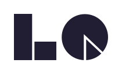

Phase 01
スコープ設計
体験を可視化し、やりたいこと100から最初に作る10を見出す。
確定スコープUIデザインユースケースKPIトーンマナー

LEAN QUEST AI新規事業 — MVP スコープ設計
体験を可視化し、スコープを絞り、KPI とブランドまで決めて動く MVP に。 冒険の一歩目を、確かなものに。
課題
多くの新規事業は「決められない循環」で止まる。可視化されないまま機能を盛り込み、検証が遅れる。
メソッド
アクター・ユースケース・モデリング・ジャーニーで体験を見える化。 影響度 × 工数で並べ替え、含む機能を 10 以下に確定する。小さく試して、確信を持って前へ。
プロセス
体験を可視化し、やりたいこと100から最初に作る10を見出す。
絞ったスコープを、動くMVPとして素早く形にする。
使いながら反応を見て、次のスコープを決めていく。
主要機能 ①
アクター・ユースケース・モデリング(OOUI)・ジャーニーで、誰がどう使うかを可視化する。
ナビゲーション・ワイヤー・データ設計・バックエンドまで、作る前に骨格を固める。
主要機能 ②
影響度 × 工数で優先順位を判断。初期開発・運用・学習コストを見て、含む機能を 10 以下に絞る。
追うべき指標を定め、成長の道筋とアクションをセットで設計する。
ブランド名・タグライン・配色・トーンマナーを決め、世界観まで一気通貫で。
主要機能 ③
AWS プレビューで素早く形に。さらに v0 で本格的なプロトタイプへ育てる。
定義したスコープ・ブランドをデザイナーへ受け渡し、制作へスムーズに接続。
分析からブランドまでを 1 枚のスライドデッキに。投資判断・社内提案にそのまま使える。
AI エンジン
主要モデルを切り替えながら、各ステップの生成品質を引き出す。結果は自動で保存。
緻密な分析・設計と長文の構造化に。
幅広いタスクをバランス良く。
マルチモーダルと発散の探索に。
提供価値
あいまいな構想を、最初の MVP へ。やりたいこと100を、最初の10へ絞り込む。